Met de uitkomsten van het trend onderzoek naar e-mail marketing ben ik verschillende iteraties gaan ontwerpen voor de marketing mail voor de Simac app.
Ik ben 3 verschillende ontwerpen gaan maken voor de marketing mail voor Simac, in elk ontwerp komt een marketing mail trend in terug. De 3 ontwerpen zijn gemaakt op basis van de email design guidelines van MailChimp. De 3 gemaakte ontwerpen zullen met behulp van interviews op de doelgroep onderzocht worden welke het meest effectief is op het gebied van het motiveren van gebruikers om de Simac app te downloaden.
Hieronder zijn verschillende design guidelines te zien van MailChimp die ik in mijn ontwerpen heb toegepast.
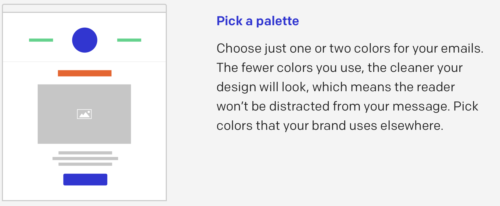
Pick a Palette
Voor het kleurgebruik in de marketing mail heb ik gekozen voor de kleuren van de Simac huisstijl, deze zijn hieronder te zien.
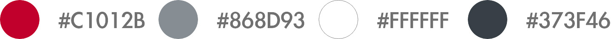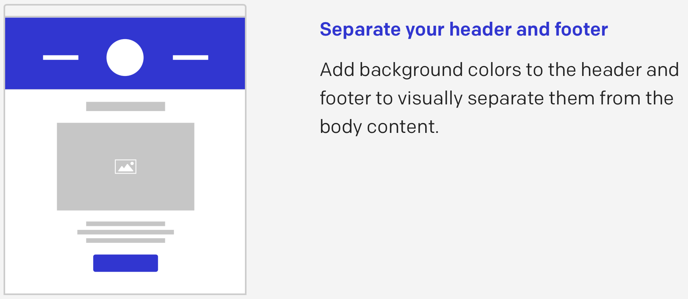
Separate your header and footer
Ik heb de header en footer in de marketing mail een rode achtergrond gegeven om ze van de rest van de mail te onderscheiden.
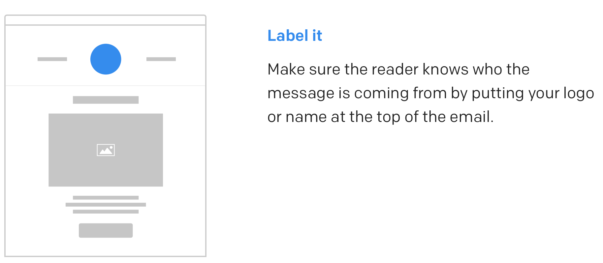
Label it
Bovenaan de mail is het logo van Simac te vinden zodat het voor de doelgroep in 1 oogslag duidelijk is dat de mail afkomstig is van Simac.
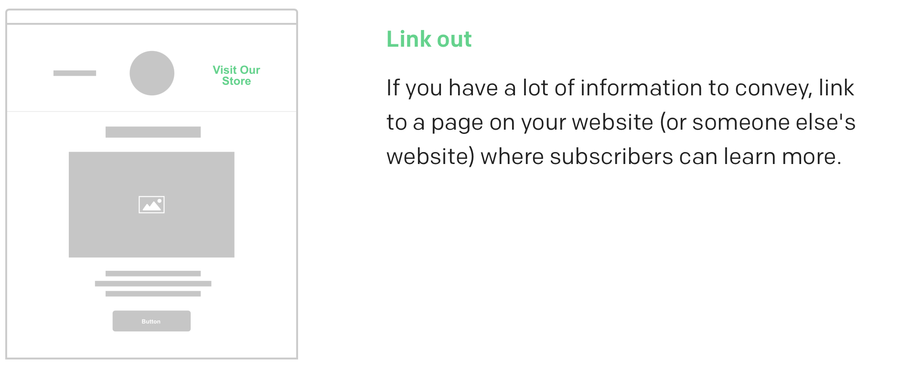
Link out
In de header naast het logo van Simac zijn 2 linkjes te vinden naar de Simac website en de Simac Instagram pagina.
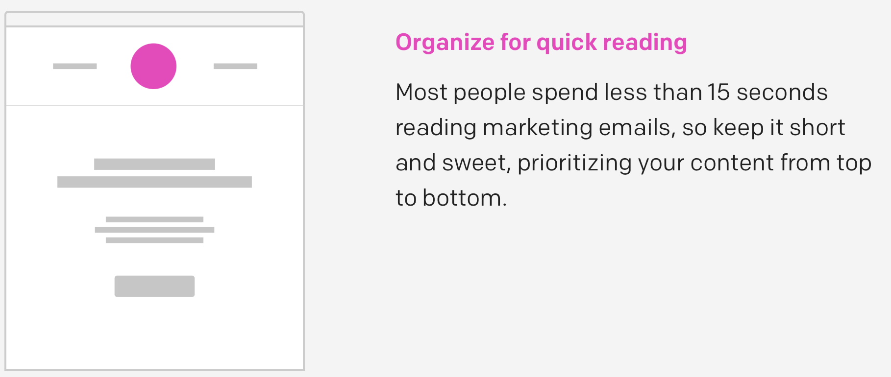
Organize for quick reading
Ik heb de hoeveelheid tekst in de mail minimaal gehouden. Alle tekst samen is binnen 15 seconden te lezen, waardoor de gebruiker niet snel afdwaald. Ik heb vooral afbeeldingen gebruikt om de boodschap van de mail duidelijk te maken.
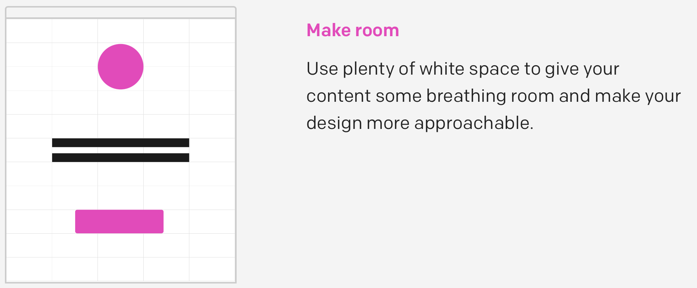
Make room
In de mail heb ik gebruik gemaakt van wit ruimte tussen de secties om het geheel overzichtelijk te houden voor de lezer.
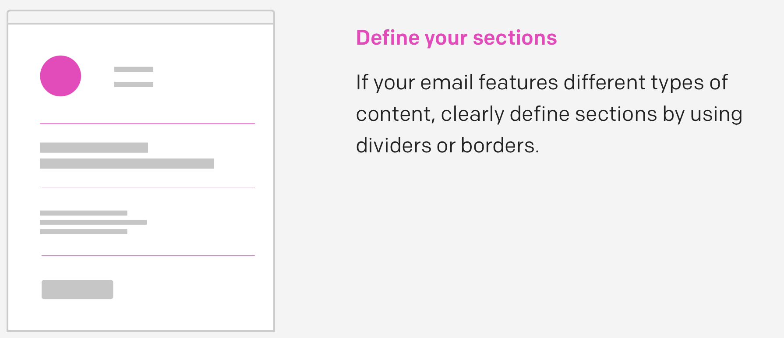
Define your sections
De marketing mail bestaat uit 2 delen, de app introductie en het gedeelte waar de gebruiker wordt overgehaald om de app te gebruiken. Deze 2 secties heb ik van elkaar gescheiden door middel van een streep.
Hieronder zijn de 3 ontwerpen te zien die ik heb gemaakt voor de marketing mail voor de Simac app. Hierin zijn de toegepaste design guidelines in terug te vinden.
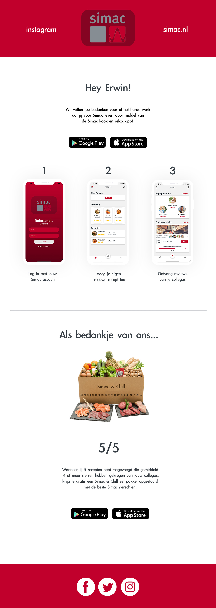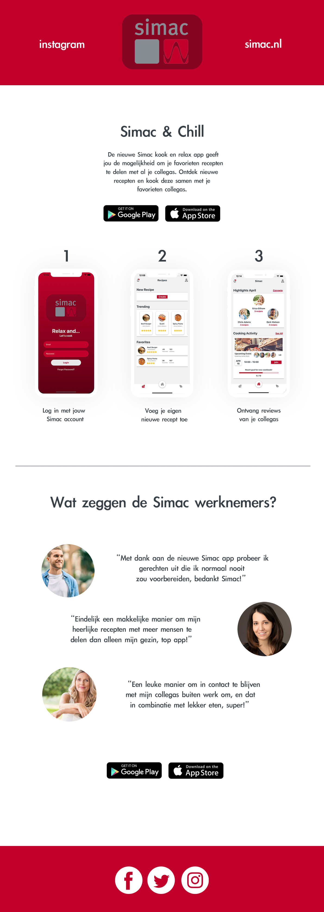
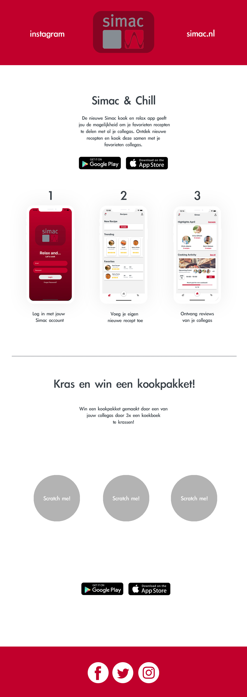
Op basis van de email trend research en mailchimp design guidelines heb ik 3 verschillende ontwerpen gemaakt voor de marketing mail voor de Simac app. De volgende stap is om deze door middel van interviews te testen op de doelgroep om erachter te komen welk ontwerp en marketing mail trend het meest effectief is op het gebied van het motiveren van gebruikers om de Simac app te downloaden.
Mailchimp. (z.d.). Geraadpleegd op 4 mei 2021, van https://mailchimp.com/email-design-guide/